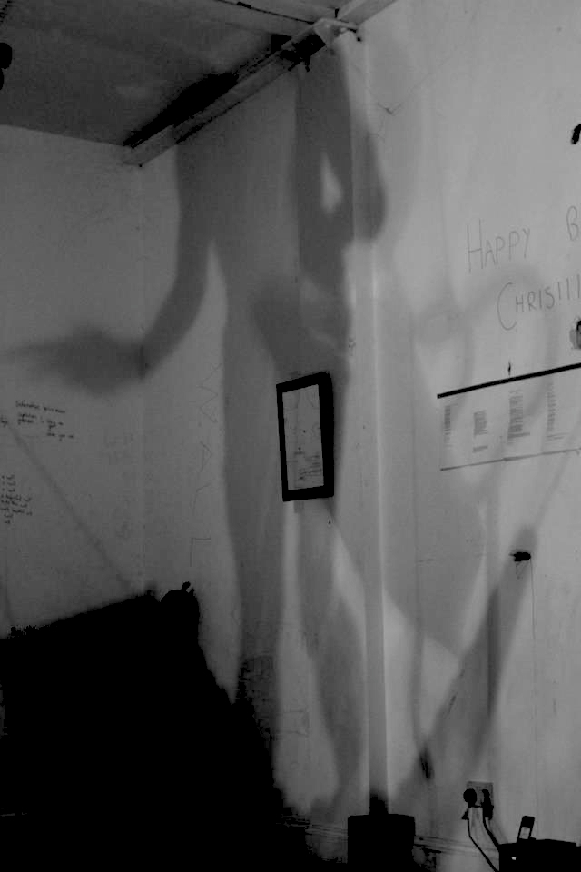
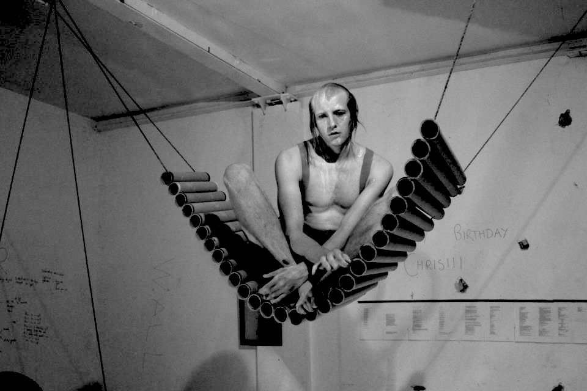
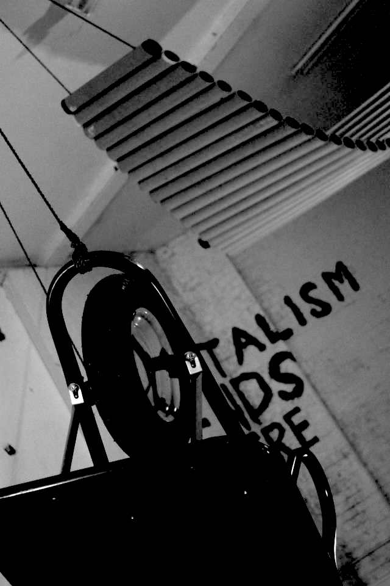
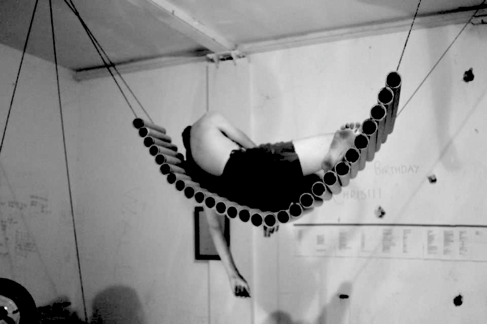
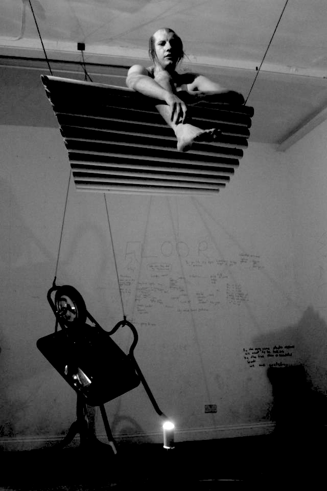
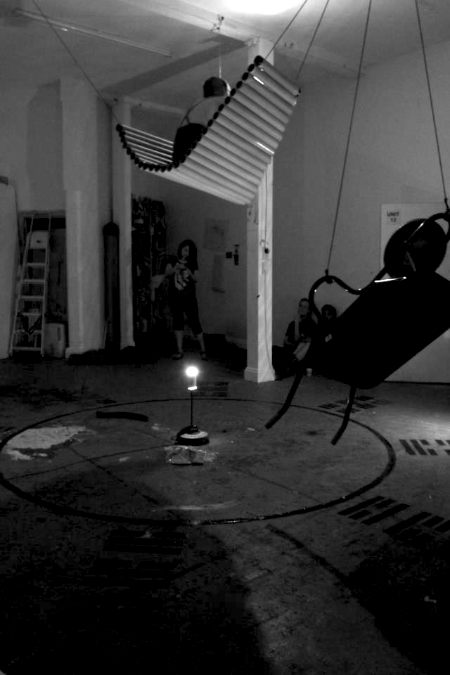
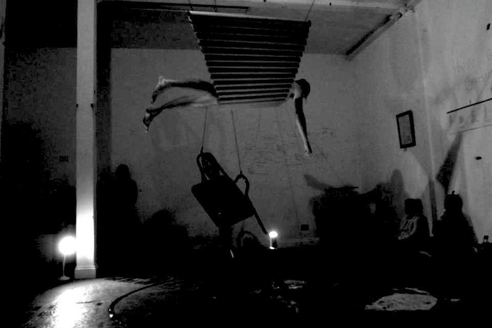

//
2015//
Spontaneous Combustion Festival, Hug Roux Law, Bussy Building, London//
Felt Acts, Heckle, Bosse & Baum, London//
2014//
WPAC open, 38 Hoe Street, London//
Vanishing Entities, Lime Wharf, London//
Hello Ape Eyes, Brunel Tunnel, London//
Liebe RA, MKII, London//
Ode Action (#2 Helene Smith) Guerrilla Studio, London//
7th ICCCA COAL ESSENCE Iron Forming Art, Ritual and Landscape, Pedvale Museum, Latvia//
Heteroglossia, Central Saint Martins, London//
Materialising Site, Lethaby Gallery, London//
Nourishment, Anatums Abode, London//
Live Your Dreams, Crypt Gallery, London//
Pilgrim Age, Vorspiel Club, Transmediale Festival, Berlin//
2013//
Navigate Performance Party, The Glass Factory, London//
Action Ode (#1 Claude Debussy) The Levitated, London//
Found, Royal Academy of Arts, London//
Tomorrow I'll be Elsewhere, A-Side B-Side Gallery, London//
M.S.G (Madness, Sanity & Gentrification) London//
Responsive Spaces, The Parasol Unit, London//
Intermission: An Audio Portrait of Place, Lisbon Architecture Triennale//
MAYDAY, ]performance s p a c e [, London//
Susan So Lazy, Cafe OTO Project Space, London//
Corps Exquis, Battersea Arts Center, London//
Edge of the Land, Hundred Years Gallery, London//
Sounding Space, The Sound Portal, London//
InTransit, V22, London//
2012//
OpenHouse, MOMA PS1//
Nothing will come of nothing. Speak Again. A chance conversation between John Cage and Antonin Artaud. The Situation Room, London//
Pussy Riot Je t Aime, Le Baron, Paris//
Residencies//
Fljotstunga, Iceland//
Anatums Abode, London//
MOMA PS1, NYC, USA//